✍
Cours & Authoring
Préparer, structurer, importer ou sélectionner une leçon.
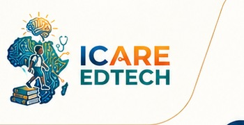
Parler à ICAREICARE est un environnement d’orchestration pédagogique hybride et offline-first qui transforme le temps de classe en temps de compréhension, de pratique, d’expérimentation, d’évaluation et de remédiation.
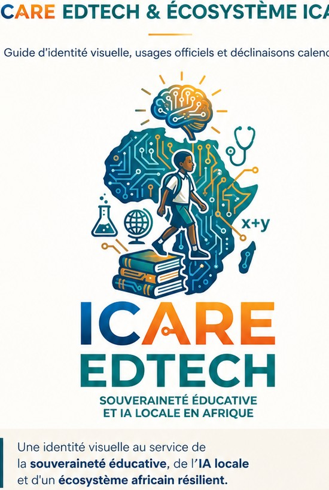
Dans une séance de mathématiques ou de sciences de 3 heures, un constat terrain récurrent est que 2 h 30 à 2 h 45 peuvent être absorbées par la copie du cours. Il reste trop peu de temps pour expliquer, pratiquer, expérimenter, corriger et développer les compétences.
Les durées ci-dessus sont présentées comme observations terrain à confirmer par mesure systématique lors du pilote, et non comme statistiques nationales.
ICARE réunit dans un même système les étapes qui sont habituellement dispersées : préparer le cours, l’expliquer, faire pratiquer, expérimenter, évaluer, identifier les difficultés, remédier et réévaluer.
Préparer, structurer, importer ou sélectionner une leçon.
Présenter, annoter, manipuler et partager pendant la séance.
Visualiser et expérimenter des phénomènes scientifiques.
Calcul littéral, géométrie, démarches scientifiques et résolution progressive.
Diagnostiques, formatives, sommatives et par compétences.
Identifier les notions mal maîtrisées et proposer un nouveau parcours.
ICARE s’appuie sur une idée de passerelle éducative : relier programmes, compréhension, expérimentation, compétences et situations concrètes. L’enseignant reste l’architecte et l’orchestrateur de cette progression ; le numérique et l’IA sont des instruments d’appui.
Les interfaces ci-dessous sont des captures authentifiées du prototype logiciel ICARE V0 en fonctionnement local. Elles remplacent les maquettes illustratives précédemment utilisées sur cette page.
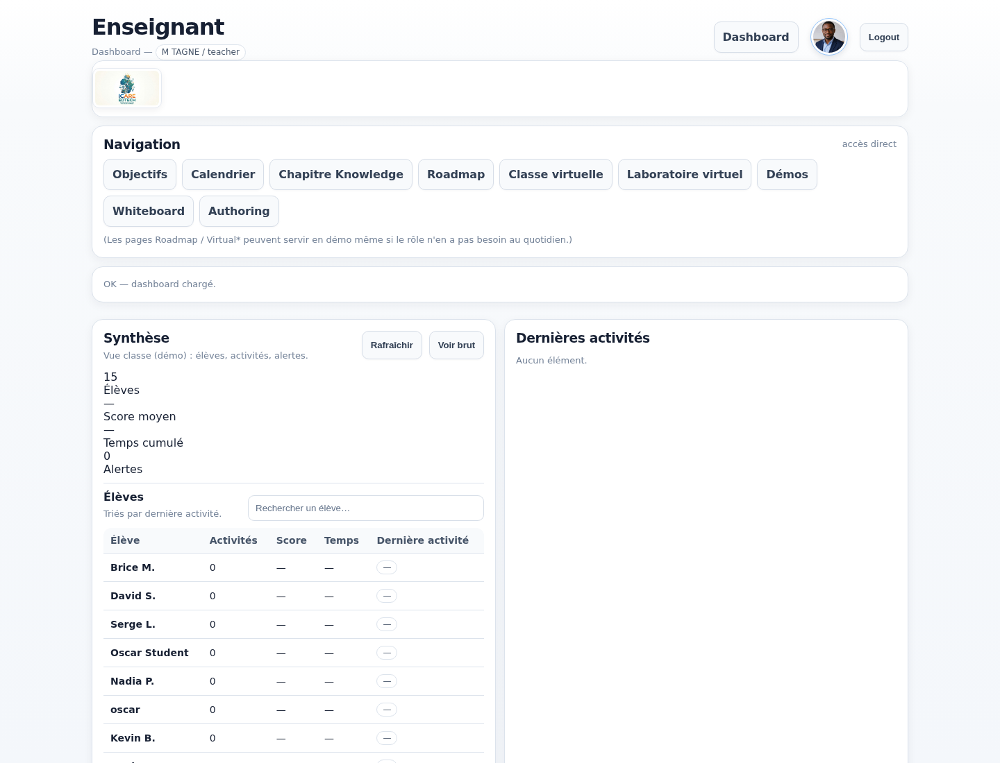
Prototype V0 · capture authentifiéeLe tableau de bord enseignant centralise l’accès aux classes, cours, activités et outils pédagogiques. Il constitue le point d’entrée du parcours de préparation et d’animation de la séance.
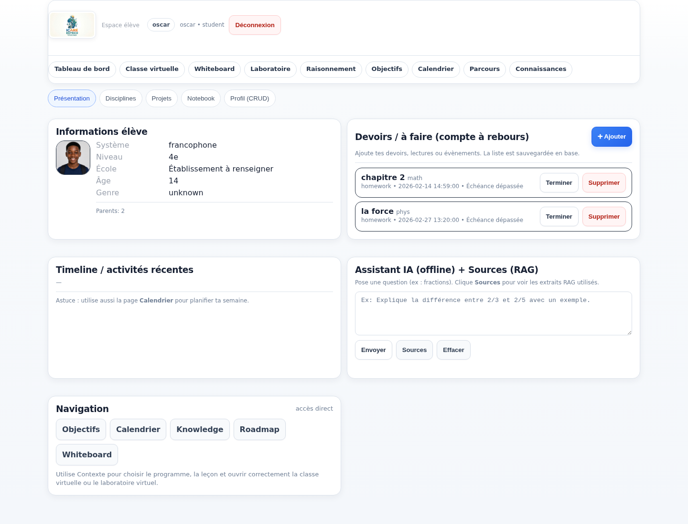
Prototype V0 · capture authentifiéeL’espace élève regroupe le travail pédagogique et s’articule avec les objectifs, la roadmap et la bibliothèque de connaissances. L’objectif est de structurer la progression plutôt que de limiter l’expérience à une simple consultation de cours.
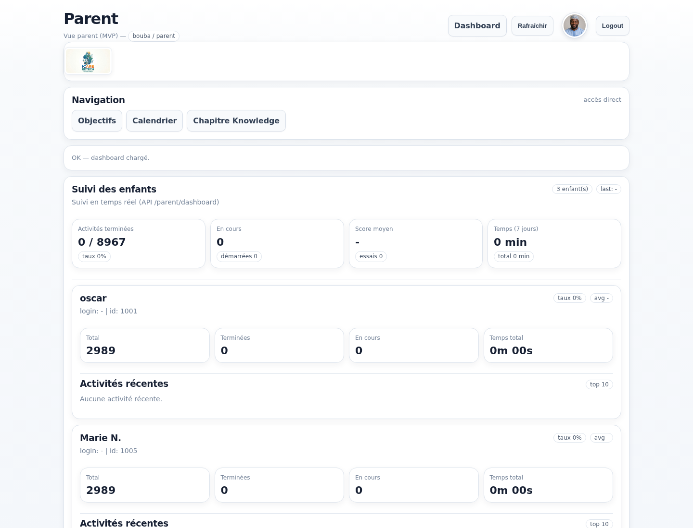
Prototype V0 · capture authentifiéeL’espace parent est une surface distincte de l’espace élève. Il vise à rendre le suivi plus lisible pour la famille et à soutenir la continuité entre l’école et la maison.
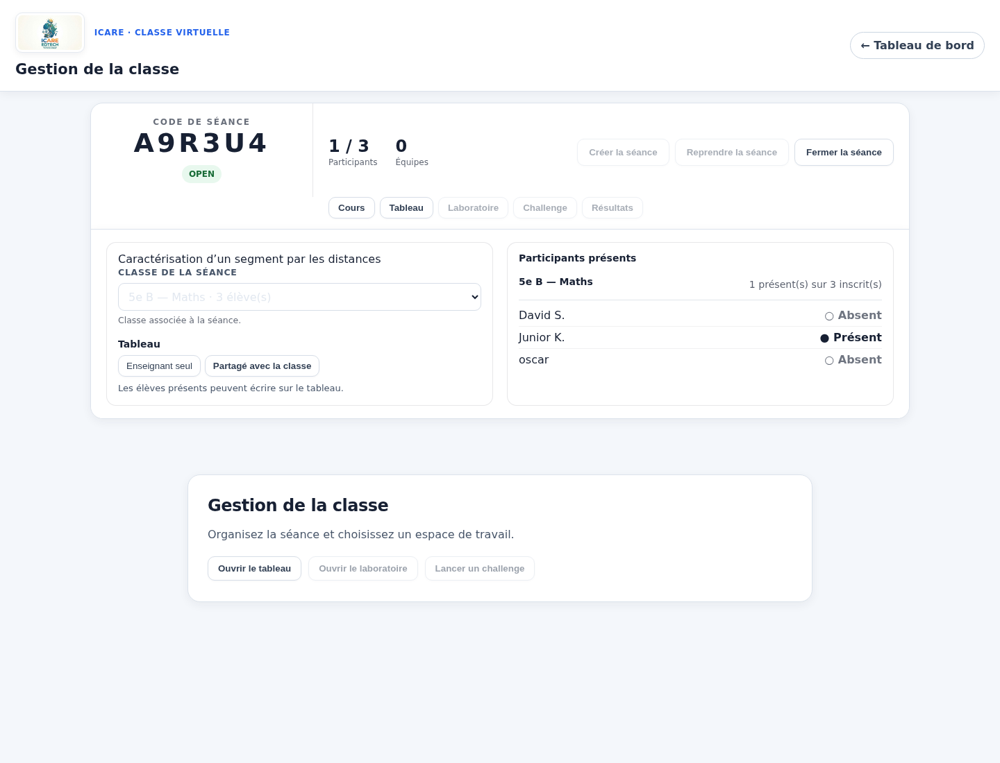
Prototype V0 · capture authentifiéeICARE dispose de surfaces dédiées à l’organisation de la classe, au tableau vivant et à l’expérimentation. Ces briques sont présentées comme des interfaces déjà démontrables du prototype, avec une intégration fonctionnelle encore en évolution.
Les captures logicielles sont issues du prototype V0 authentifié. Les photographies représentent le prototype matériel actuel. Les rendus de la BOX et de la borne énergétique restent explicitement des visions de design ou des concepts.
Cliquez sur une interface pour l’agrandir et examiner le prototype.
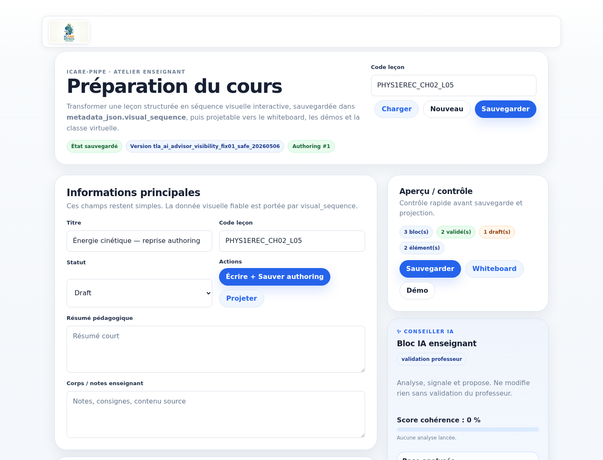
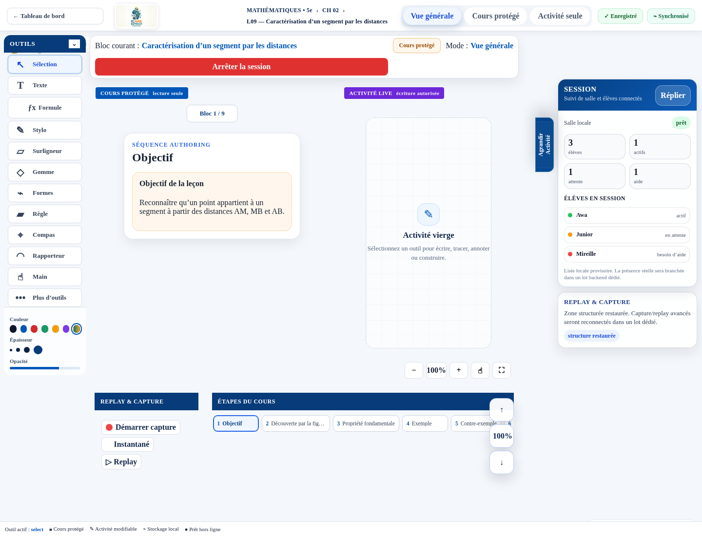
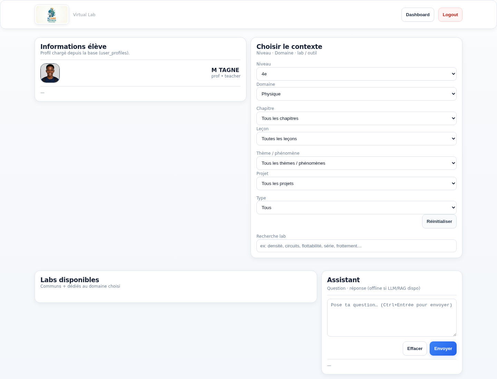
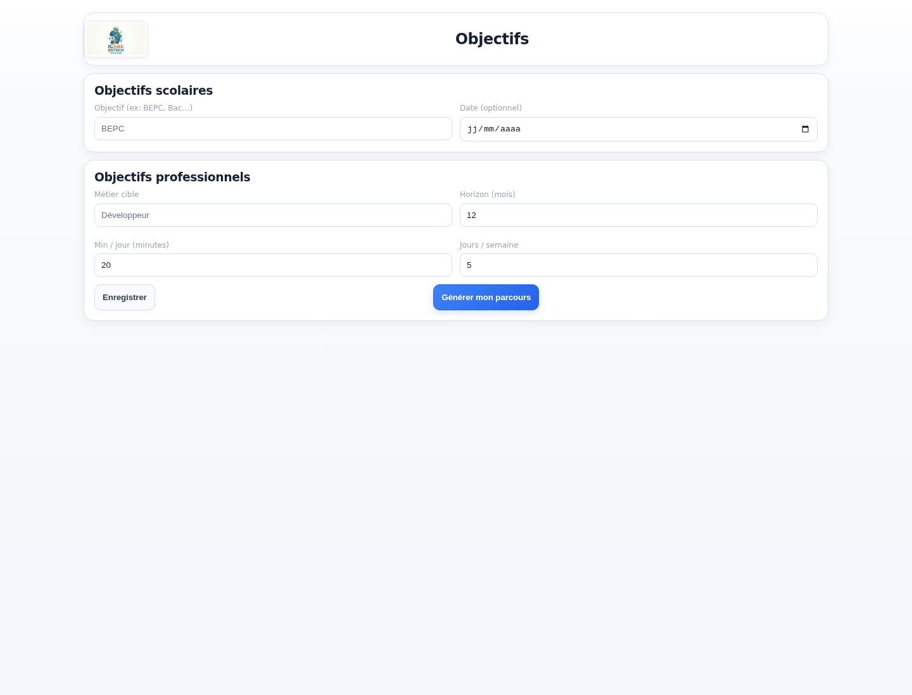
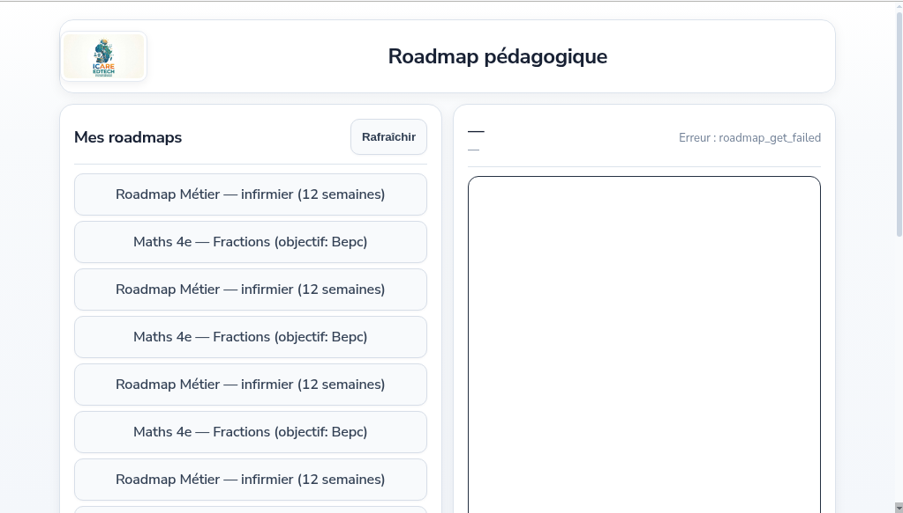
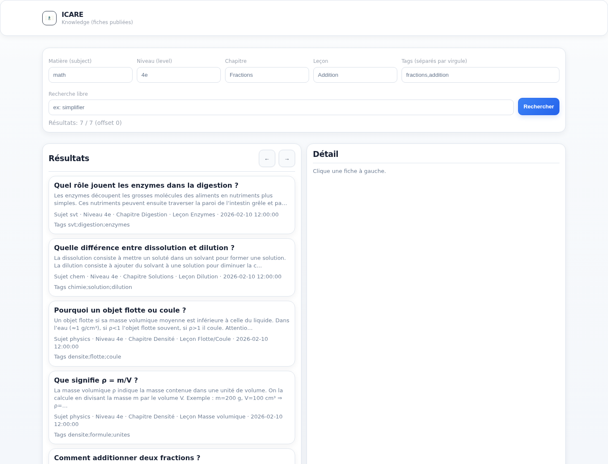
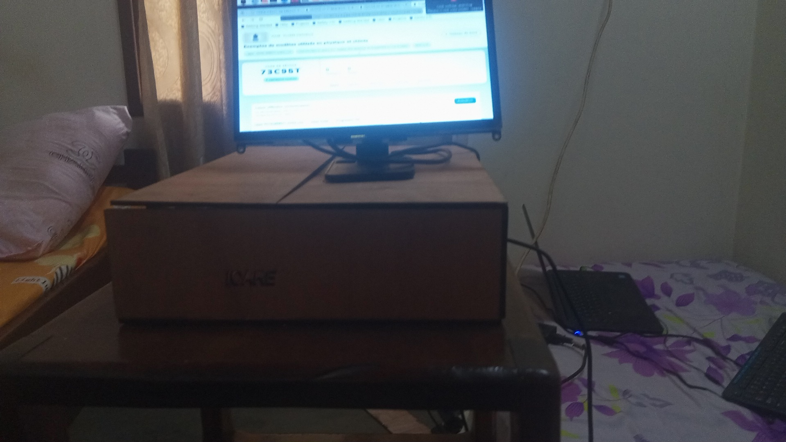
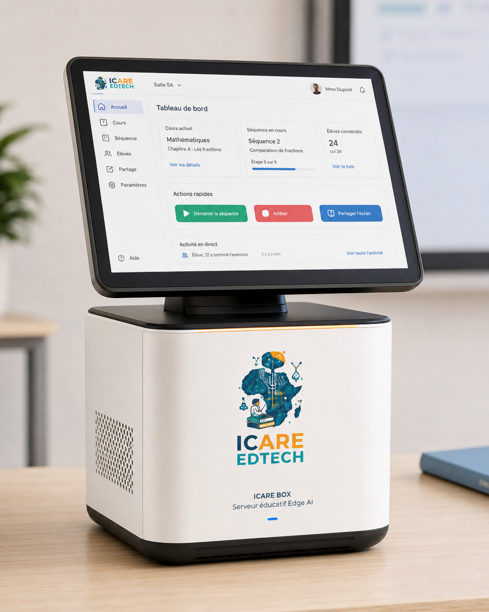
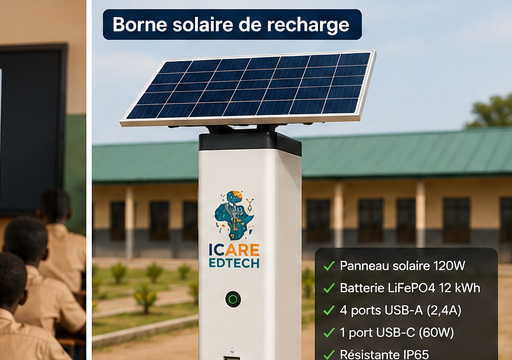
Les vidéos complètent les captures en montrant le comportement des interfaces au cours d’une démonstration.
Ouvrir la playlist sur YouTubeGain potentiel pour une salle d’environ 70 élèves selon le mode d’équipement, tout en renforçant l’offre pédagogique.
Pour 70 élèves actifs à 300 FCFA par élève et par matière, hors accompagnement à domicile.
Accès scolaire visé, contre environ 30 000 FCFA/mois pour un répétiteur dans l’exemple de référence.
Moins de copie, davantage de compréhension, pratique, expérimentation et remédiation.
Les chiffres économiques sont des hypothèses de modèle à valider par le pilote et les premiers contrats.
2 000 FCFA / élève actif / mois
10 000 FCFA / classe / mois
+1 000 FCFA / élève actif / mois si parc fourni
Abonnement familial optionnel
La charte 2026 place ICARE EDTECH au premier plan de la communication institutionnelle et commerciale. ICARE BOX constitue une infrastructure Edge locale de soutien. ICARE TOTEM reste un concept de résilience énergétique à dimensionner et valider.
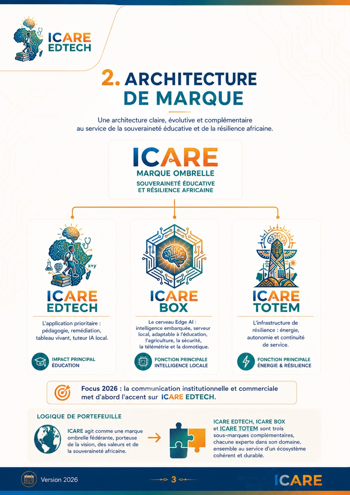
Le projet s’appuie sur un triptyque de réflexion en cours : diagnostiquer les fractures du système éducatif, formaliser une passerelle entre savoirs et monde réel, puis traduire cette vision en architecture pédagogique et technologique.
Comprendre les contraintes de l’APC, des classes nombreuses, des apprentissages scientifiques et des transitions entre école, supérieur et emploi.
Article 1 · diagnostic éducatifRelier connaissances, compétences, situations concrètes, enseignement supérieur, métiers et innovation sans réduire l’école à la préparation d’un examen.
Article 2 · théorie de la passerelle éducativeTransformer cette vision en parcours guidés, outils enseignants, expérimentation, ressources locales et infrastructure offline-first.
Article 3 · Architecture pédagogique offline-firstCes travaux structurent le cadre conceptuel du projet. Ils ne remplacent ni une validation scientifique indépendante, ni les mesures d’impact qui devront être produites pendant les pilotes.
Mesurer la part de la séance réellement consacrée à expliquer, pratiquer et expérimenter.
Suivre connaissances, compréhension, raisonnement et compétences plutôt qu’une note isolée.
Réduire la dépendance aux répétiteurs individuels coûteux pour les familles.
Documenter des projets élèves et, selon les partenariats disponibles, financer leur réalisation.
Le positionnement « Newbie » correspond ici à une phase d’incubation et de validation entrepreneuriale : le produit est substantiel, mais le pricing, l’adoption, les coûts réels et la répétabilité commerciale doivent encore être prouvés.
Produit, développement, data & IA, communication-adoption et gestion de projet sont organisés autour d’une même discipline : stabiliser, documenter, valider puis transmettre.
Fondateur · Produit · Architecture · Business development
Vision produit, cœur applicatif et hardware, arbitrages, partenariats et stratégie de développement.
Développeur fullstack
Site web, maintenance, développement et reprise progressive de lots techniques.
Data Scientist · IA & contenus pédagogiques
Enrichissement des contenus pédagogiques, données, qualité des ressources et outils d’assistance IA.
Communication & adoption
Communication, contenus, communautés, adoption utilisateurs et visibilité du projet.
Gestion de projet · PMO
Planning, coordination, documentation, risques, suivi des livrables et préparation opérationnelle.
Chaque action possède un responsable, une échéance, un statut et des dépendances identifiées.
Les travaux sont exécutés avec versioning, preuves, fichiers de référence et critères de validation.
Les sujets critiques sont revus avant intégration, diffusion ou changement de périmètre.
Guides, comptes rendus et procédures permettent une passation progressive sans perdre la cohérence du projet.
La vitrine ICARE EDTECH applique directement les codes de la charte 2026 : bleu souverain, bleu nuit, turquoise intelligence, cyan innovation, orange énergie et ivoire.
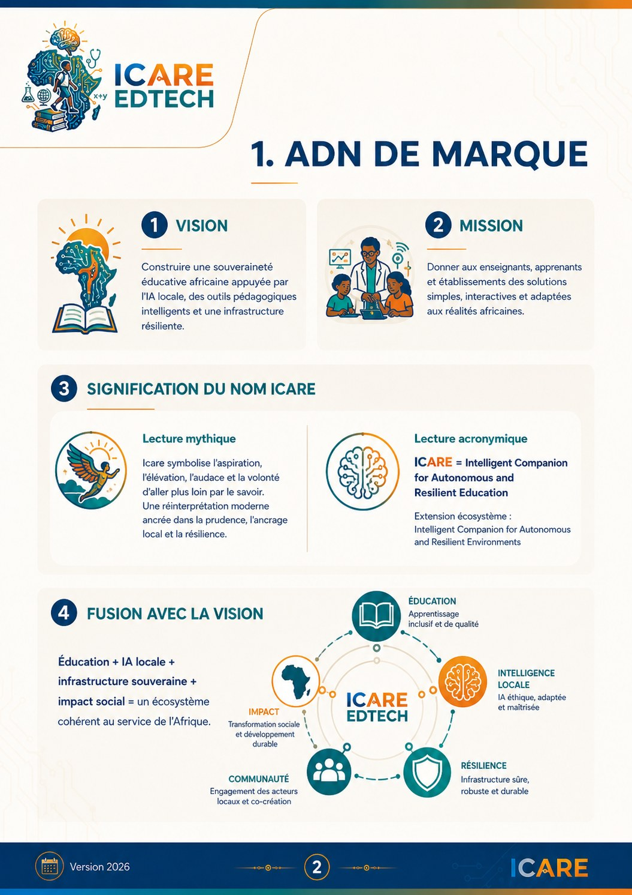
Nous cherchons des établissements pilotes, partenaires pédagogiques, programmes d’incubation et financeurs d’impact pour valider et déployer le modèle.